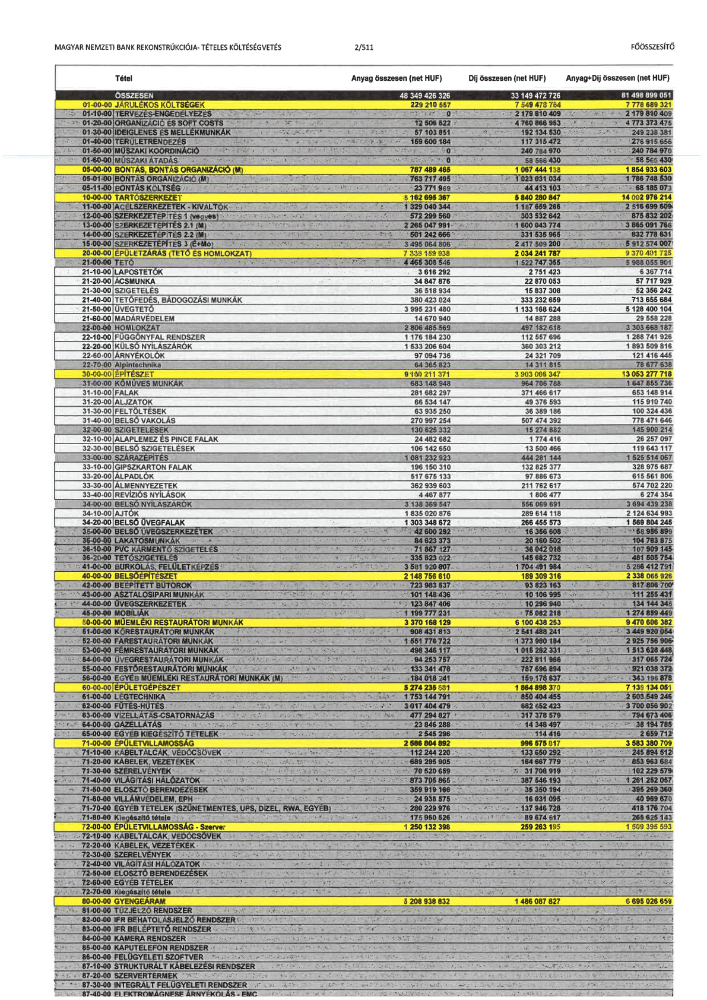
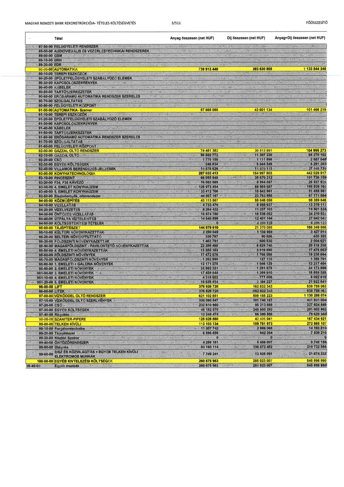

| Tétel | Anyag összesen (net HUF) | Díj összesen (net HUF) | Anyag+Díj összesen (net HUF) |
|---|---|---|---|
| ÖSSZESEN | 48 349 426 326 | 33 149 472 726 | 81 498 899 051 |
| 01-00-00 JÁRULÉKOS KÖLTSÉGEK | 229 210 557 | 7 549 478 764 | 7 778 689 321 |
| 01-10-00 TERVEZÉS-ENGEDÉLYEZÉS | 0 | 2 179 810 409 | 2 179 810 409 |
| 01-20-00 ORGANIZÁCIÓ ÉS SOFT COSTS | 12 506 522 | 4 760 866 953 | 4 773 373 475 |
| 01-30-00 IDEIGLENES ÉS MELLÉKMUNKÁK | 57 103 851 | 192 134 530 | 249 238 381 |
| 01-40-00 TERÜLETRENDEZÉS | 159 600 184 | 117 315 472 | 276 915 656 |
| 01-50-00 MŰSZAKI KOORDINÁCIÓ | 0 | 240 784 970 | 240 784 970 |
| 01-60-00 MŰSZAKI ÁTADÁS | 0 | 58 566 430 | 58 566 430 |
| 05-00-00 BONTÁS, BONTÁS ORGANIZÁCIÓ (M) | 787 489 465 | 1 067 444 138 | 1 854 933 603 |
| 05-01-00 BONTÁS ORGANIZÁCIÓ (M) | 763 717 496 | 1 023 031 034 | 1 786 748 530 |
| 05-11-00 BONTÁS KÖLTSÉG | 23 771 969 | 44 413 103 | 68 185 073 |
| 10-00-00 TARTÓSZERKEZET | 8 162 695 367 | 5 840 280 847 | 14 002 976 214 |
| 11-00-00 ACÉLSZERKEZETEK - KIVÁLTÓK | 1 329 040 344 | 1 187 659 266 | 2 516 699 609 |
| 12-00-00 SZERKEZETÉPÍTÉS 1 (vegyes) | 572 299 560 | 303 532 642 | 875 832 202 |
| 13-00-00 SZERKEZETÉPÍTÉS 2.1 (M) | 2 265 047 991 | 1 600 043 774 | 3 865 091 766 |
| 14-00-00 SZERKEZETÉPÍTÉS 2.2 (M) | 501 242 666 | 331 535 965 | 832 778 631 |
| 15-00-00 SZERKEZETÉPÍTÉS 3 (É+Mo) | 3 495 064 806 | 2 417 509 200 | 5 912 574 007 |
| 20-00-00 ÉPÜLETZÁRÁS (TETŐ ÉS HOMLOKZAT) | 7 335 159 938 | 2 034 241 787 | 9 370 401 725 |
| 21-00-00 TETŐ | 4 465 305 548 | 1 522 747 356 | 5 988 055 901 |
| 21-10-00 LAPOSTETŐK | 3 616 292 | 2 751 423 | 6 367 714 |
| 21-20-00 ÁCSMUNKA | 34 847 876 | 22 870 053 | 57 717 929 |
| 21-30-00 SZIGETELÉS | 36 518 934 | 15 837 308 | 52 356 242 |
| 21-40-00 TETŐFEDÉS, BÁDOGOZÁSI MUNKÁK | 380 423 024 | 333 232 669 | 713 655 694 |
| 21-50-00 ÜVEGTETŐ | 3 995 231 480 | 1 133 168 624 | 5 128 400 104 |
| 21-60-00 MADÁRVÉDELEM | 14 670 940 | 14 887 288 | 29 558 228 |
| 22-00-00 HOMLOKZAT | 2 805 485 569 | 497 182 618 | 3 303 668 187 |
| 22-10-00 FÜGGÖNYFAL RENDSZER | 1 176 184 230 | 112 557 696 | 1 288 741 926 |
| 22-20-00 KÜLSŐ NYÍLÁSZÁRÓK | 1 533 206 604 | 360 303 212 | 1 893 509 816 |
| 22-60-00 ÁRNYÉKOLÓK | 97 094 736 | 24 321 709 | 121 416 445 |
| 22-70-00 Alpintechnika | 64 365 823 | 14 311 815 | 78 677 638 |
| 30-00-00 ÉPÍTÉSZET | 9 150 211 371 | 3 903 066 347 | 13 053 277 718 |
| 31-00-00 KŐMŰVES MUNKÁK | 683 148 948 | 964 706 788 | 1 647 855 736 |
| 31-10-00 FALAK | 281 682 297 | 371 466 617 | 653 148 914 |
| 31-20-00 ALJZATOK | 66 534 147 | 49 376 593 | 115 910 740 |
| 31-30-00 FELTÖLTÉSEK | 63 935 250 | 36 389 186 | 100 324 436 |
| 31-40-00 BELSŐ VAKOLÁS | 270 997 254 | 507 474 392 | 778 471 646 |
| 32-00-00 SZIGETELÉSEK | 130 625 332 | 15 274 882 | 145 900 214 |
| 32-10-00 ALAPLEMEZ ÉS PINCE FALAK | 24 482 682 | 1 774 416 | 26 257 097 |
| 32-30-00 BELSŐ SZIGETELÉSEK | 106 142 650 | 13 500 466 | 119 643 117 |
| 33-00-00 SZÁRAZÉPÍTÉS | 1 081 232 923 | 444 281 144 | 1 525 514 067 |
| 33-10-00 GIPSZKARTON FALAK | 196 150 310 | 132 825 377 | 328 975 687 |
| 33-20-00 ELŐTÉTFALAK | 517 675 133 | 97 886 673 | 615 561 806 |
| 33-30-00 ÁLMENNYEZETEK | 362 939 603 | 211 762 617 | 574 702 220 |
| 33-40-00 REVÍZIÓS NYÍLÁSOK | 4 467 877 | 1 806 477 | 6 274 354 |
| 34-00-00 BELSŐ NYÍLÁSZÁRÓK | 3 138 369 547 | 556 069 691 | 3 694 439 238 |
| 34-10-00 AJTÓK | 1 835 020 876 | 289 614 118 | 2 124 634 993 |
| 34-20-00 BELSŐ ÜVEGFALAK | 1 303 348 672 | 266 455 573 | 1 569 804 245 |
| 35-00-00 BELSŐ ÜVEGSZERKEZETEK | 42 600 292 | 16 356 608 | 58 956 899 |
| 36-00-00 LAKATOSMUNKÁK | 84 623 373 | 20 160 502 | 104 783 875 |
| 36-10-00 TŰZ MENTESÍTŐ SZIGETELÉS | 71 862 337 | 35 642 018 | 107 504 355 |
| 38-20-00 TETŐSZIGETELÉS | 335 823 022 | 145 682 732 | 481 505 754 |
| 41-00-00 BURKOLÁS, FELÜLETKÉPZÉS | 3 581 920 807 | 1 704 491 984 | 5 286 412 791 |
| 40-00-00 BELSŐÉPÍTÉSZET | 2 148 756 610 | 189 309 316 | 2 338 065 926 |
| 42-00-00 BEÉPÍTETT BÚTOROK | 723 983 637 | 93 623 163 | 817 606 790 |
| 43-00-00 ASZTALOSIPARI MUNKÁK | 101 148 026 | 10 106 905 | 111 254 931 |
| 44-00-00 ÜVEGSZERKEZETEK | 123 847 406 | 10 296 940 | 134 144 346 |
| 45-00-00 MOBÍLIÁK | 1 199 777 231 | 75 082 218 | 1 274 859 449 |
| 50-00-00 MŰEMLÉKI RESTAURÁTORI MUNKÁK | 3 370 168 129 | 6 100 438 253 | 9 470 606 382 |
| 51-00-00 KŐRESTAURÁTORI MUNKÁK | 908 431 813 | 2 541 488 241 | 3 449 920 054 |
| 52-00-00 FARESTAURÁTORI MUNKÁK | 1 551 776 722 | 1 373 980 184 | 2 925 756 906 |
| 53-00-00 FÉMRESTAURÁTORI MUNKÁK | 498 346 117 | 1 015 282 331 | 1 513 628 448 |
| 54-00-00 ÜVEGRESTAURÁTORI MUNKÁK | 94 253 757 | 222 811 966 | 317 065 724 |
| 55-00-00 FESTŐRESTAURÁTORI MUNKÁK | 133 341 478 | 787 596 894 | 921 038 372 |
| 56-00-00 EGYÉB MŰEMLÉKI RESTAURÁTORI MUNKÁK (M) | 184 018 241 | 159 178 637 | 343 196 878 |
| 60-00-00 ÉPÜLETGÉPÉSZET | 5 274 235 681 | 1 864 898 370 | 7 139 134 051 |
| 61-00-00 LÉGTECHNIKA | 1 753 144 791 | 850 404 455 | 2 603 549 246 |
| 62-00-00 FŰTÉS-HŰTÉS | 3 017 404 479 | 682 652 423 | 3 700 056 902 |
| 63-00-00 VÍZELLÁTÁS-CSATORNÁZÁS | 477 294 827 | 317 378 578 | 794 673 406 |
| 64-00-00 GÁZELLÁTÁS | 23 846 288 | 14 348 497 | 38 194 785 |
| 65-00-00 EGYÉB KIEGÉSZÍTŐ TÉTELEK | 2 545 296 | 114 416 | 2 659 712 |
| 71-00-00 ÉPÜLETVILLAMOSSÁG | 2 586 804 892 | 996 575 817 | 3 583 380 709 |
| 71-10-00 KÁBELTÁLCÁK, VÉDŐCSÖVEK | 112 244 220 | 133 650 292 | 245 894 512 |
| 71-20-00 KÁBELEK, VEZETÉKEK | 689 295 905 | 164 667 779 | 853 963 684 |
| 71-30-00 SZERELVÉNYEK | 70 520 660 | 31 708 919 | 102 229 579 |
| 71-40-00 VILÁGÍTÁSI HÁLÓZATOK | 873 705 865 | 387 546 193 | 1 261 252 057 |
| 71-50-00 ELOSZTÓ BERENDEZÉSEK | 359 919 166 | 35 350 194 | 395 269 360 |
| 71-60-00 VILLÁMVÉDELEM, EPH | 24 938 575 | 16 031 095 | 40 969 670 |
| 71-70-00 EGYÉB TÉTELEK (SZÜNETMENTES, UPS, DÍZEL, RWA, EGYÉB) | 280 229 976 | 137 946 728 | 418 176 704 |
| 71-80-00 Kiegészítő tétele | 175 950 526 | 89 674 617 | 265 625 143 |
| 72-00-00 ÉPÜLETVILLAMOSSÁG - Szerver | 1 250 132 398 | 259 263 195 | 1 509 396 593 |
| 80-00-00 GYENGEÁRAM | 5 208 938 832 | 1 486 087 827 | 6 695 026 659 |
| 90-00-00 AUTOMATIKA | 739 913 440 | 393 630 805 | 1 133 544 245 |
| 91-00-00 AUTOMATIKA - Szerver | 57 865 085 | 43 601 134 | 101 466 219 |
| 92-00-00 GÁZZAL OLTÓ RENDSZER | 74 481 382 | 30 513 891 | 104 995 273 |
| 92-10-00 GÁZZAL OLTÓ | 56 882 772 | 11 387 330 | 68 270 102 |
| 92-20-00 CSŐ | 1 775 150 | 1 111 898 | 2 887 048 |
| 92-30-00 EGYÉB KÖLTSÉGEK | 246 834 | 6 044 549 | 6 291 383 |
| 92-40-00 VILLAMOS BERENDEZÉS-JELZÉSEK | 15 576 626 | 11 970 113 | 27 546 739 |
| 93-00-00 KONYHATECHNOLÓGIA | 287 032 413 | 154 997 503 | 442 029 917 |
| 93-10-00 PINCESZINT | 66 055 948 | 35 670 212 | 101 726 159 |
| 93-20-00 F34, F35 KÁVÉZÓ | 16 583 069 | 8 954 857 | 25 537 926 |
| 93-30-00 4. EMELET KONYHAÜZEM | 126 973 494 | 68 565 687 | 195 539 180 |
| 93-40-00 5. EMELET KONYHAÜZEM | 33 412 706 | 18 042 861 | 51 455 567 |
| 93-60-00 Elszívóernyők, oltórendszer | 44 007 197 | 23 763 888 | 67 771 084 |
| 94-00-00 KÖZMŰÉPÍTÉS | 43 313 587 | 55 046 058 | 98 359 646 |
| 94-10-00 VÍZELLÁTÁS | 4 733 476 | 8 585 637 | 13 319 113 |
| 94-20-00 VÍZELVEZETÉS | 8 264 432 | 11 237 103 | 19 501 535 |
| 94-30-00 ÖNTÖZÉS VÍZELLÁTÁS | 15 674 780 | 18 536 052 | 34 210 832 |
| 94-40-00 ÚTPÁLYA VÍZTELENÍTÉS | 14 640 899 | 12 401 144 | 27 042 043 |
| 94-50-00 KÖLTSÉGTÉRÍTÉSI TÉTELEK | 0 | 4 286 123 | 4 286 123 |
| 95-00-00 TÁJÉPÍTÉSZET | 144 979 610 | 21 370 085 | 166 349 696 |
| 95-10-00 KÜLTÉRI NÖVÉNYKAZETTÁK | 2 290 049 | 1 136 969 | 3 427 018 |
| 95-20-00 BELTÉRI NÖVÉNYFUTTATÓ | 339 787 | 90 606 | 430 393 |
| 95-30-00 FÖLDSZINTI NÖVÉNYKAZETTÁK | 1 403 791 | 600 830 | 2 004 621 |
| 95-40-00 MAGASFÖLDSZINT - PAVILONTETŐ NÖVÉNYKAZETTÁK | 22 288 498 | 6 829 740 | 29 118 238 |
| 95-50-00 4. EMELETI NÖVÉNYKAZETTÁK | 13 556 163 | 3 919 890 | 17 476 053 |
| 95-60-00 FÖLDSZINTI NÖVÉNYEK | 17 472 576 | 1 766 088 | 19 238 664 |
| 95-70-00 MAGASFÖLDSZINTI NÖVÉNYEK | 1 262 590 | 127 110 | 1 389 701 |
| 95-80-00 1. EMELET + GALÉRIA NÖVÉNYEK | 12 171 275 | 1 046 129 | 13 217 404 |
| 95-90-00 2. EMELETI NÖVÉNYEK | 32 882 321 | 1 291 678 | 34 173 999 |
| 95-100-00 3. EMELETI NÖVÉNYEK | 17 459 544 | 1 399 810 | 18 859 355 |
| 95-100-00 4. EMELETI NÖVÉNYEK | 4 315 602 | 777 008 | 5 092 610 |
| 95-120-00 5. EMELETI NÖVÉNYEK | 19 538 414 | 2 384 227 | 21 922 641 |
| 96-00-00 LIFT | 376 926 720 | 162 832 343 | 539 759 063 |
| 96-00-00 LIFT (alsor) | 376 926 720 | 162 832 343 | 539 759 063 |
| 97-00-00 VÍZKÖDDEL OLTÓ RENDSZER | 621 102 851 | 509 185 223 | 1 130 288 074 |
| 97-10-00 VÍZKÖDDEL OLTÓ SZERLVÉNYEK | 330 090 847 | 101 740 157 | 431 831 004 |
| 97-20-00 CSŐ | 232 610 960 | 95 213 888 | 327 824 848 |
| 97-30-00 EGYÉB KÖLTSÉGEK | 45 162 570 | 245 850 292 | 291 002 862 |
| 97-40-00 Rögzítés | 13 248 474 | 66 380 886 | 79 629 360 |
| 98-00-00 SZANITER-PIPERE | 125 028 880 | 42 406 041 | 167 434 921 |
| 99-00-00 TELKEN KÍVÜLI | 113 103 134 | 159 781 973 | 272 885 107 |
| 99-10-00 Forgalomtechnika | 11 307 742 | 2 886 068 | 14 193 810 |
| 99-20-00 Tájépítészet | 6 596 856 | 942 354 | 7 539 210 |
| 99-30-00 Köztéri Szobor | 0 | 0 | 0 |
| 99-40-00 ÖNTÖZŐRENDSZER | 4 289 181 | 5 456 007 | 9 745 188 |
| 99-50-00 Útépítés | 83 160 114 | 136 572 452 | 219 732 566 |
| 99-60-00 DÍSZ ÉS KÖZVILÁGÍTÁS + EGYÉB TELKEN KÍVÜLI ELEKTROMOS MUNKÁK | 7 749 241 | 13 925 091 | 21 674 333 |
| 100-00-00 EGYÉB KIVITELEZÉSI KÖLTSÉGEK | 260 875 983 | 285 023 007 | 545 898 990 |
| 99-40-00 Egyéb munkák | 260 875 983 | 285 023 007 | 545 898 990 |

